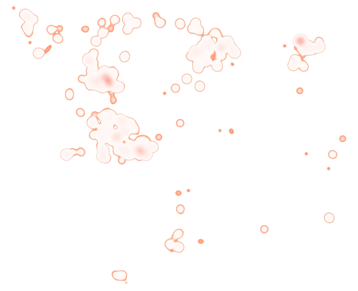
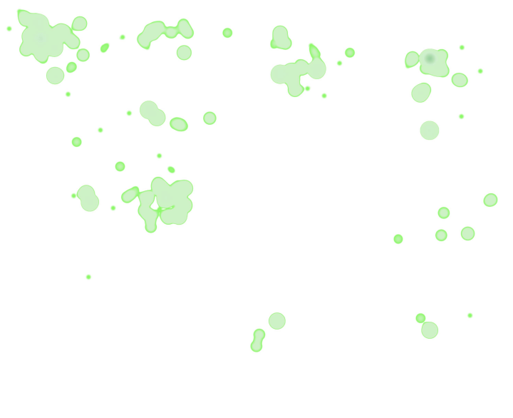
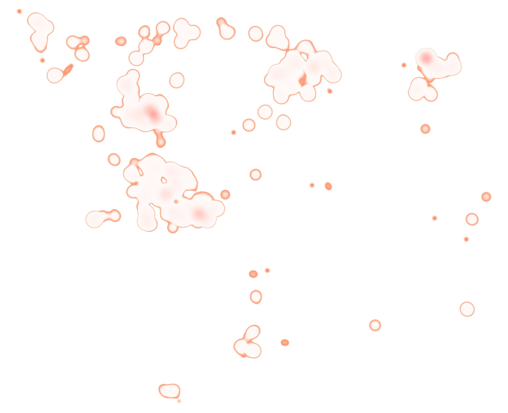
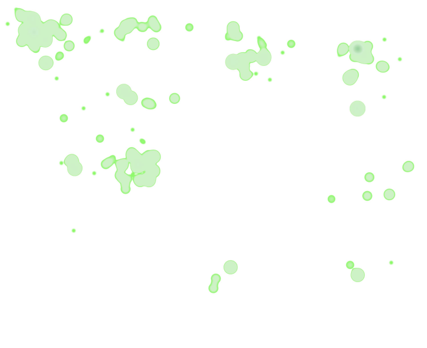

Race and Place: Mapping the Demography of Faulkner's Fictions
Johannes Burgers
Introduction
The Digital Yoknapatawpha database is a highly curated data set that represents "all" of the locations, characters, and events in Faulkner's Yoknapatawpha fictions. This data can be mapped to gain insight into the interactions between different types of characters across the varied spaces of the narratives. These interactions represent a kind of demographic map. This is not a traditional demography. There are, of course, no census records, voting rolls, or cadastral surveys of Yoknapatawpha that demographers can use to paint a picture of the population. There are, however, a number of data points that can act as proxies for understanding the relationship between characters and locations across the corpus. The most intuitive way to display this information is through maps commonly used for population analysis: choropleths and population density "heatmaps." Needless to say, translating information about a fictional text into data that is intelligible to a Geographic Information System (GIS) is involved and imperfect. Nevertheless, the resulting maps are highly suggestive of the deep connections Faulkner made between people and places. The following interactive commentary documents how the DY data was used to create heatmaps and choropleths of Yoknapatawpha's racial composition, how to read them, what they might mean, and, finally, their limitations.1
Understanding the Data
The data in DY is split across three tables: locations, characters, and, events. Locations and characters denote places and people who are either present or mentioned in the text. Events are the conjunction of locations and characters, and represent one continuous action at one location by an individual character or multiple characters during one discrete period of time. Iterating characters over events by location generates a frequency distribution of the different types of characters that appear at specific locations. Computationally, joining and iterating the various tables is a simple procedure; deciding what characters are represented at a particular location on a demographic map is a far more vexing philosophical question.
Character DataAt its most basic level, demographic mapping relies on counting the absence and presence of particular kinds of people within a specific space, such as: births by country, senior citizen road accident deaths by state, or female votes cast by district. Creating a demographic map of a fictional world is challenging precisely because characters are not people. Indeed, narratologists have wrestled with the nature of character ontology for some time.2 For the purpose of mapping characters, there were three significant issues that required imperfect editorial solutions that sliced off about 20% of the data.
- Present vs. Mentioned - All of the characters on the maps are only those that are present at the event, and excludes those who are mentioned, even if the mentioned characters might play a significant role in the narrative.
- Individual [] vs. Group [] - There is no consistent way to account for non-countable collectives like "crowds," "men of Jefferson," or "a couple." All groups were eliminated from the count.
- Singular [] vs. Plural identities [] - In some cases where characters reappear in different texts, Faulkner revises their racial identity. Rather than consolidating them into singular characters, they were left as plural identities.
Another important consideration is the placement and consolidation of locations on an aggregate map. There are 68 individual maps in DY, each custom-made for a particular text. Some of the texts include locations that are either inside or outside of Yoknapatawpha, but feature a large number of events. To solve this problem, the team created custom insets. The benefit of this approach is that it provides a far more granular view into the world of Yoknapatawpha. The drawback is that map insets overlap when consolidating the maps. Case in point, the short story "Ad Astra," and the novels, Sanctuary and The Sound and the Fury, all have insets in the northeast quadrant of the map, but they signify places as far apart as the Western Front, Cambridge, Massachusetts, and Oxford, Mississippi. Figures 1-3 show the placement of these insets across the various maps.


 X
X
 X
X
To rectify this problem, all of the locations outside of Yoknapatawpha were remapped either onto the "region," "nation," or "world" maps. The insets that provide a more detailed view of places within Yoknapatawpha, as for example the Compson place in The Sound and the Fury, were consolidated into one location on the main map. These translations sacrifice some of the detail of the individual maps, but this makes a negligible difference when trying to capture population distributions at scale.
A more intractable issue is that locations in fiction do not exist independently of the events that occur there. With a demographic map, the statistics describe a specific space, but those statistics do not have an effect on the position and boundaries of locations. Put crudely, the map exists before the statistics. What's more, in the real world, natural and man-made features like rivers and roads do not tend to change dramatically over a short span of time. Yet, space in Faulkner's texts does not necessarily abide by these physical rules. For one, the maps do not precede the narratives. Faulkner's did not draw a map of Yoknapatawpha and then plot characters onto it. More importantly, each text shapes its locations, as much as it is shaped by them. The DY team has attempted to honor this creative vision by treating each text as its own world with its own map. The result is that some places might be in several different positions on the total consolidated map. Likewise, the landscape and the man-made features of the map can also change, thereby placing each location in a new context.
The interactive display below was designed to demonstrate how landscape, infrastructure, and location all interact with one another within and across texts. The display allows users to toggle between the maps of different texts: "The Old People," "A Justice," and Go Down, Moses. One thing that these texts share is that they all include the blacksmith shop where Sam Fathers works. This location is indicated by the different colored icons. The icons for "The Old People" and "A Justice" are close together, and at some remove from the blacksmith on the McCaslin plantation. Superficially, it would appear the blacksmiths for "The Old People" and "A Justice" are more similar to each other than that of Go Down, Moses. A careful comparison of the landscape and infrastructure surrounding all three locations reveals that conceptually the blacksmith in "The Old People" and Go Down, Moses share some important similarities that set them apart from the one in "A Justice." In "A Justice" the river close to the blacksmith is a tributary of the larger river to the south, in the "Old People" the tributary is connected to the river in the north. In Go Down, Moses the blacksmith is still by a tributary from the north, but it runs farther east than the one in the "Old People." The infrastructure also changes. In "A Justice" the blacksmith is along the only road mentioned that leads to town. In Go Down, Moses and "The Old People" the blacksmith is on an extensive network of roads. Its connection to the wider world is quite different than the blacksmith in "A Justice." In each case, the location and the way it interacts with the surrounding is different. There is no way to determine the "true" position of a location, because it can only be established in the context of the text and in relation to the surrounding landscape and infrastructure.
These shifts between maps would create quite a number of challenges if this were a traditional demographic study. For example, one of the most common ways to study populations is by counting the people who live at a particular residence, but if, as is the case in DY, the place of residence has multiple possible locations, it would be difficult to determine the number of people living in these residences without knowing the "primary" residence, so to speak. Using the DY data it is possible to side-step this hurdle, because a far more powerful piece of information is available: event data. Event data indicates where characters are and when. Thus, rather than only having the home addresses of characters, DY has the equivalent of their GPS data on their phone, and can track them throughout Yoknapatawpha. Doing this for all of the characters and breaking them down by a particular attribute, in this case race, indicates which types of characters are in the different areas of the map. Importantly, this type of analysis works well across larger areas, but breaks down at the level of individual locations. If, for instance, we wanted to know what kinds of people show up at Sam Fathers' blacksmith shop, we would have to consolidate the three individual locations into one shop and put it somewhere on the map. As none of the three shops is the "true" shop, the resulting map would show the number of people at an arbitrarily chosen location, which is not very useful for analysis.
Literary Cartography and Demographic Maps
In demographic mapping, there are two common types of maps: choropleths and heatmaps. Choropleths aggregate the features within a predefined area such as a country, state, or county. Heatmaps show the frequency of a feature across an area. Both types of maps tell different stories. In choropleths, the data is shaped by the area. They are good at demonstrating differences between areas, such as state voting results. In heatmaps, the area is generated by the data, and highlights differences across space, such as the rate of infection of a disease. The possibility of creating either map is in some measure dependent on the data available. The DY data, which captures where characters are interacting and when, is well-suited to heatmaps. With some modification and recoding, the data can also be represented as a choropleth.
HeatmapsIn mapping, a heatmap layer is created through a density function that produces features on a color gradient and a pre-defined scaled radius based on the frequency of the variable. In lay terms, this means that as more characters are in one space the color gets darker and the area covered gets larger. Without getting into the technical details, the parameters for the interactive map below were set so each heatmap layer was on the same scale and registered any location where more than one character occurred. The reason for ignoring locations where only one character ever occurs is that this leads to stippling across the map, which is visually distorting and actually gives these locations more importance than they merit.
Racial interaction and conflict are two of the most predominant features of Faulkner's fiction. These heatmaps focus on the racial distribution of Faulkner's world, though class, gender, family, and vitality are all different ways to
think of demography in DY. In the database, there are eight distinct racial attributes a character can have.3 Mapping all of these on a heatmap with different
colors would be visually overwhelming, and therefore all characters who
were not coded as "white" [], "black", [] or "Indian" [] were recoded as having
"mixed ancestry" [  ]. This also includes characters whose race is indeterminable, such as Joe Christmas. These four layers were then overlaid with each other to show
possible interactions between characters in space. The interactive map below allows users to add and subtract layers to see where the different groups interact with one another.
]. This also includes characters whose race is indeterminable, such as Joe Christmas. These four layers were then overlaid with each other to show
possible interactions between characters in space. The interactive map below allows users to add and subtract layers to see where the different groups interact with one another.

 



What is immediately noticeable on the map is that the different places in Yoknapatawpha have a different racial composition. Directly north of the town are the spaces occupied by the "Indians," and, accordingly, they are the site of the most Native American activity. Meanwhile, the areas to the northwest and the northeast of town have more characters of mixed ancestry. These two corners of the map are the sites of two novels that deal extensively with race: Absalom, Absalom! and Go Down, Moses. It is tempting to suggest that part of the reason why more mixed ancestry characters appear here is because the Sutpen and McCaslin plantations are more isolated from town, and the sexual exploitation that led to mixed ancestry children was less likely to be met with public opprobrium. Another reason why the character types are comparatively more diverse in the northwest is because of the hunting grounds of the Big Bottom, Sutpen's former plantation. This is where men from different backgrounds come together to engage in the ritual of the hunt in Go Down, Moses.
At the locations closer to town, there are relatively fewer characters outside of the white and black binary. The Sartoris and Compson places both maintain strictly segregated households with very few mixed ancestry characters appearing at these locations. Likewise, the town of Jefferson may see some interaction between white and non-white characters, but the majority of the people who appear here are white. This trend is even more pronounced in Frenchman's Bend, where the majority of the population is white.
Animated HeatmapsWhile the above map provides a reasonable overview, it is also distorting because it flattens out time. DY captures time in Faulkner in multiple ways, the most salient of which are narrative time and publication date. The events in the fiction stretch from Genesis to 1980 in narrative time, though the history of Yoknapatawpha effectively begins in the later 18th century. Simultaneously, the data also represents thirty years of writing. The animation of either variable will result in the same map as above, but the way it arrives there is different. The chronology animation was created by sequencing all events by date order from 1776 to 1961 (note the date at the bottom right corner of the display). The resulting animation is additive. With each new data point that appears the heatmaps for each race will continue to grow. As all the events in each text are sequenced according to narrative time, it disregards when the text was written. By collapsing the publication date, it is possible to see how Faulkner consistently mapped different kinds of characters in different types of places, and how the action in these places is bound by narrative time.
The animation tells the story of Yoknapatawpha as the county develops from north to south. The Native American events are the first to appear north of the still non-existent town at the end of the 18th century. At about the same time, there is a smattering of activity at the McCaslin place in the northeast of the county. Then the other great northern plantation, Sutpen's hundred, becomes a hive of activity, followed by the events that transpire at the Sartoris plantation during the Civil War. At the turn of the nineteenth century, the contours of Jefferson and the hamlet of Frenchman's Bend become more visible. It is not until the early twentieth century that the Compson estate comes into focus. More of the action also stretches to the largely white, agrarian hamlet in the southeast. By the end of the First World War, many of the spaces of Yoknapatawpha have already been traversed, and the county gradually becomes more diverse in terms of the types of characters who appear, notably those of mixed ancestry. A reverse trend takes place after the Second World War when the predominant characters in events are white, and the narratives shift their attention to Frenchman's Bend. Throughout the twentieth century, the narratives also travel to places farther and farther away from Yoknapatawpha. There is more activity west of the Mississippi and there are events that take place on several different continents. On the whole, the animation underscores the fact that the spaces of Faulkner's map had different imaginative valences.
The data can also be displayed by publication date. To make this animation, several different techniques were used. First, the texts were ordered by their publication date. In the sequence, the racial heatmaps for each text "blossom" out of the map. Below this blossom layer is an additive layer that expands as more texts in the publication sequence are added to the map. In this way, it is possible to keep track of racial heatmaps of a specific text in relation to the spaces Faulkner has already described in previous texts.
The publication map tells a similar story to the chronological heatmap. Here, it is not so much chronological time in the narrative that corresponds to an increase of mixed ancestry characters, but publication date. The map gets notably more populated with mixed ancestry characters later in Faulkner's career. This is particularly true of texts like Absalom, Absalom!, Go Down, Moses, and The Reivers. On the whole though, there are a non-trivial number of texts that feature white characters almost exclusively. The Snopes trilogy especially stands out, and there are very few non-white characters who are present at the events in Frenchman's Bend. Nevertheless, the stark contrast between the racial maps of texts like Go Down, Moses and The Snopes trilogy should not be seen as an easy short-hand to understanding race in these novels. Instead, they are suggestive of how of Faulkner imaginatively connected different types of people with different types of places.
Heatmaps are a useful tool for understanding the relative density difference across areas of the map. The problem is that it is very hard to determine the orders of magnitude. It is clear that Jefferson has more activity, but there is no way to quantify this activity other than the darker shades of the respective colors. One way to quantify differences between areas of a map is through a choropleth.
Making a Choropleth
As previously noted, choropleths show the relative distribution of features within a specific area. There are two challenges for creating such a map with the DY data. First, Faulkner did not have predefined administrative areas on his own maps. True, he does describe different "beats," but the boundaries of these "beats" are not defined in a way that is useful for mapping. Second, a more general problem with choropleths is that it is hard to show population distributions for several variables if there is one predominant group. In the case of DY, the number of white characters overshadows the rest of the population, and mapping the characters by race in a choropleth results in any non-white characters barely registering on the map. One way to circumvent both of these issues is to manually create administrative areas based on thematic connections, and then render the statistics for each area as a chart. This is a visually cruder method, but provides more detailed insight into the areas. All eight race types can be represented, and it is easier to visually distinguish relative proportions. The drawback is that there is no way to animate this layer without causing a highly disjunctive experience for the viewer. The effect would be one where thirteen pie charts simultaneously change their relative proportions over time!
The choropleth (figure 4) bears out in more granular detail what the above heatmaps already showed more intuitively. The predominant group in Yoknapatawpha is white. The more north Faulkner's imagination travels, the higher the possibility of different types of characters increases. The more densely populated centers such as Jefferson and Frenchman's Bend appear to offer a check on any type of transgression of Jim Crow social codes and laws. In similar fashion, the wider world also has fewer non-white characters. The curious exception is the breakdown at the regional scale. This is actually one of the more diverse areas of the fiction. In particular, Memphis, which often acts as a transgressive antipode to Jefferson's strict social codes, has people from different racial categories interacting with one another. The statistics for each chart are also available in figure 5.
Cautions and Conclusions
Heatmaps and choropleths are incredibly powerful tools to describe space at scale. Their power can also have a distorting effect. Few elections are complete without cartographers reminding the public and pundits that just because a district, county, state, or country voted in a particular way, does not mean everyone in that space monolithically shares those beliefs. Much the same, viewing spatialized aggregations of DY data reveals the contours of life in Faulkner's fiction, but simultaneously obscures an individual character's experience. Fiction, after all, does not operate on the level of the general, but lives in the particular. These maps are best viewed as the context in which Faulkner's fiction transpires. They cannot begin to describe the nuanced, complex, and sometimes explosive, inter-racial interactions that mark so much of his writing. Nonetheless, they give a sense as to why those events play out the way they do in one place versus another.
The maps also provide a larger insight into the world of the Jim Crow South. The legal apartheid regime that was in place in the South before the Civil Rights movement was uniformly dehumanizing to non-whites, but - based on Faulkner's telling - this dehumanization was not uniformly experienced. Race also had a spatial component. The areas with the highest population density, Jefferson and Frenchman's Bend, are more segregated and whiter than the more sparsely populated, rural areas around Sutpen, McCaslin, and the Chickasaw lands. It is no coincidence that two of these locations are also the sites of former plantations. As a moderate white desegregationist, Faulkner believed that the South's original sin of slavery could only be expatiated by the Southern community coming together through the mutual recognition of a shared history as it does in Go Down, Moses. In this sense, Yoknapatawpha's uneven demography hints at a possible future demographic mosaic that is always yet to come, even if Faulkner himself might have been unclear on how to get there.
Further Reading
These maps are most powerful when they are deployed with other research methodologies and brought to bear on a specific research question. The recently published paper, Familial Places in Jim Crow Spaces: Kinship, Demography, and the Color Line in William Faulkner's Yoknapatawpha County explores the relationship between kinship, race, and space in Faulkner using different computational approaches including mapping.
Citing This Source
2. For a good overview of the debate see: Jannidis, Fotis "Character." Handbook of Narratology, edited by Peter Hühn, De Gruyter, 2014, pp. 14-29. Lamarque, Peter. Work and Object: Explorations in the Metaphysics of Art. Oxford University Press, 2010. pp. 200-1. Eder, Jens, Fotis Jannidis, and Ralf Schneider, eds. Characters in Fictional Worlds: Understanding Imaginary Beings in Literature, Film, and Other Media. De Gruyter, 2010. Ryan, Marie-Laure. "Story/Worlds/Media: Tuning the Instruments of a Media- Conscious Narratology." Storyworlds across Media: Toward a Media-Conscious Narratology, edited by Marie-Laure Ryan and Jan-Noël Thon, University of Nebraska Press, 2014, pp. 25-49. ↩
3. There is also a ninth racial category, "Asian"[], but as these characters occur very infrequently they do not register in the demographic analysis. ↩